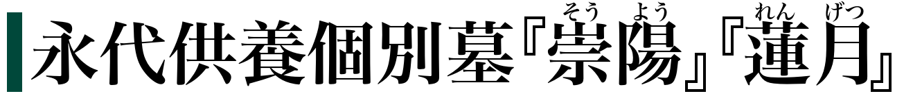
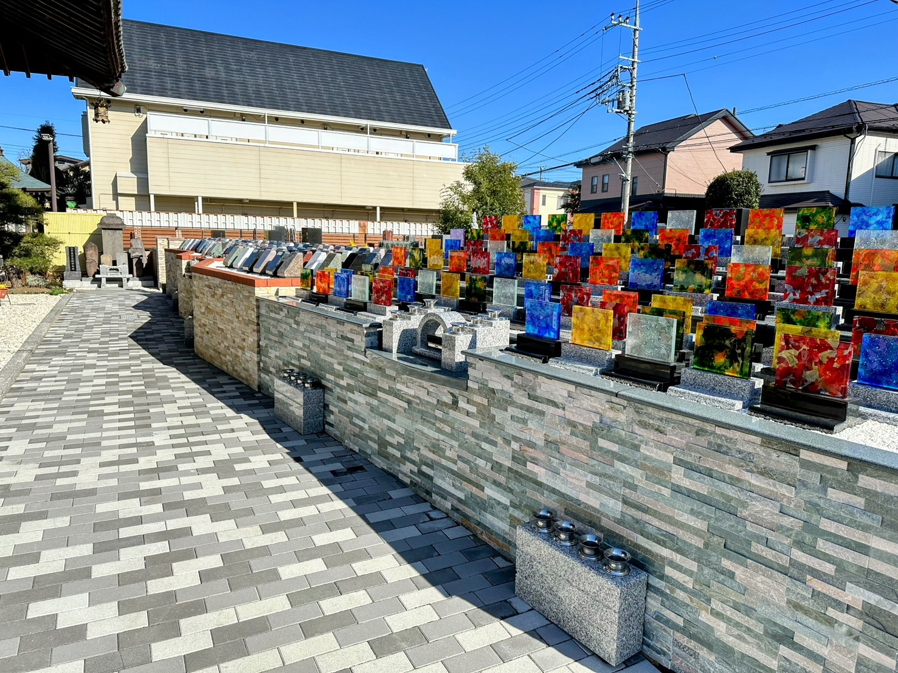
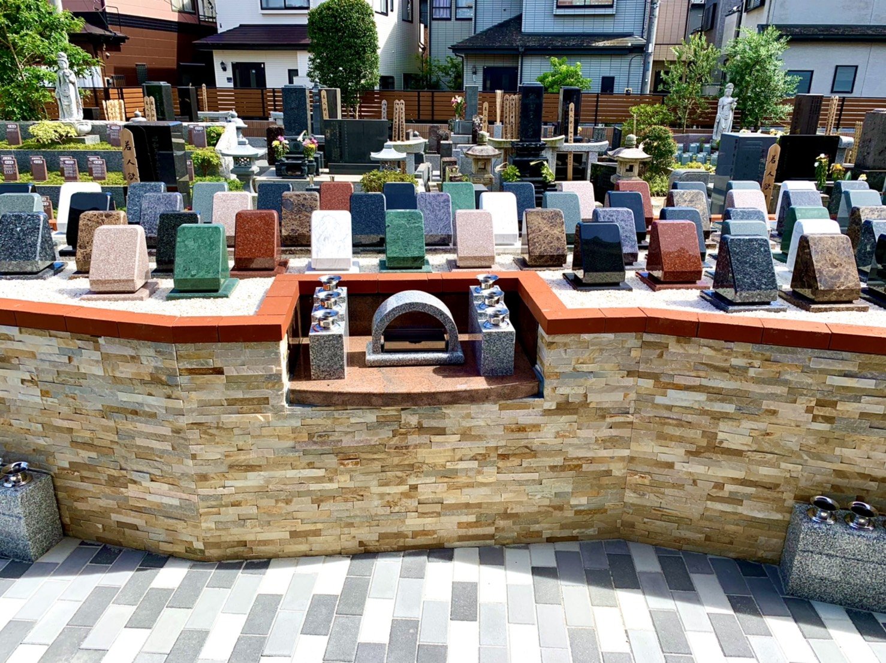
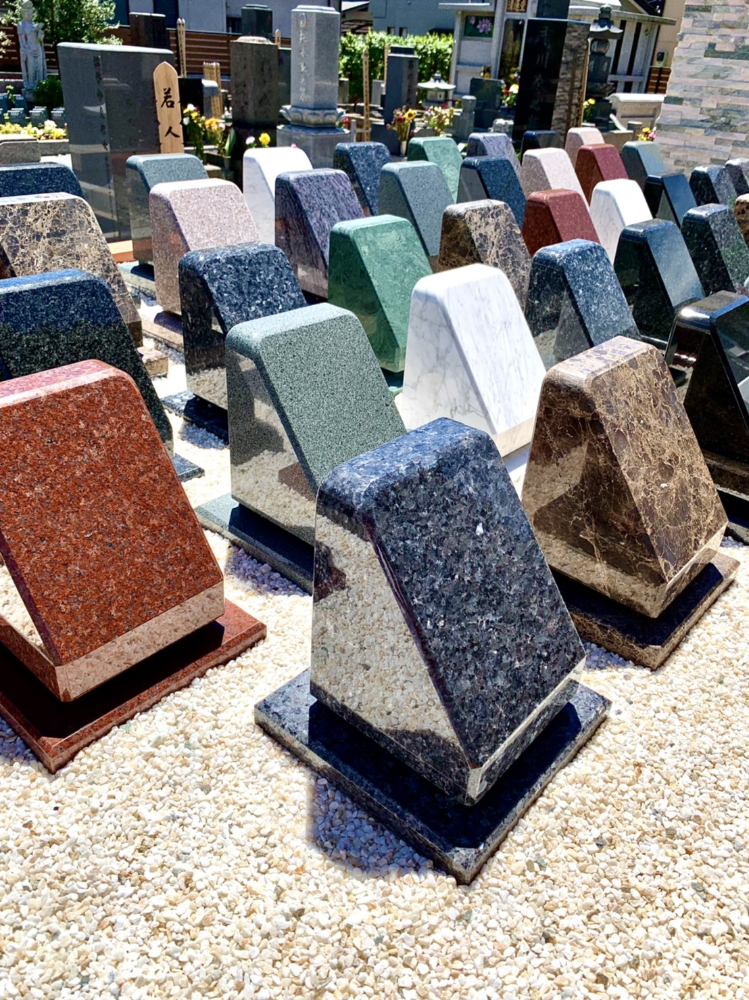
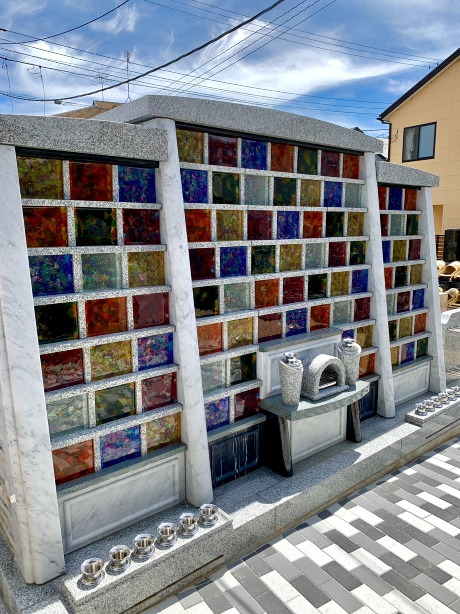
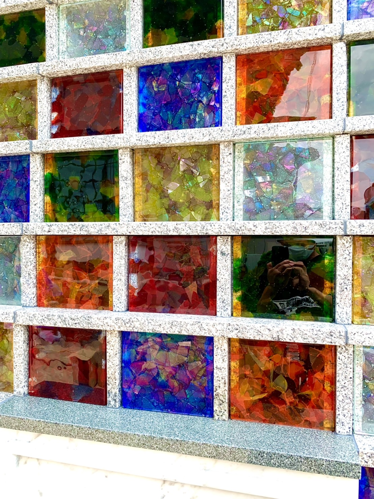

| 納骨(予定)人数 | 永代使用料総額 |
| 1名 | 65万円 |
| 2名 | 70万円 |
| 3名 | 75万円 |
| 4名 | 80万円 |
・納骨（予定）人数1名から4名まで入れます。
・年間管理費等は一切不要です。
・宗派は不問です。
・生前のお申込みも可能です。
・ご遺骨を事前にお預かりし、専用の機器にて粉骨し、
少し小さめの骨壷（4色から選択）に入れ替えてから納骨致します。
・登録者の最後の方がお亡くなりになってから17年後に、
境内の納骨堂『清蓮堂』に合葬し、崇蓮寺が永代供養致します。
・日中はいつでもご自由に見学できますが、
現地でのご説明やお申込書が必要な方は電話予約制となります。
色彩豊かな全10色の墓誌『


全6色の特注ガラス墓誌が彩る『

